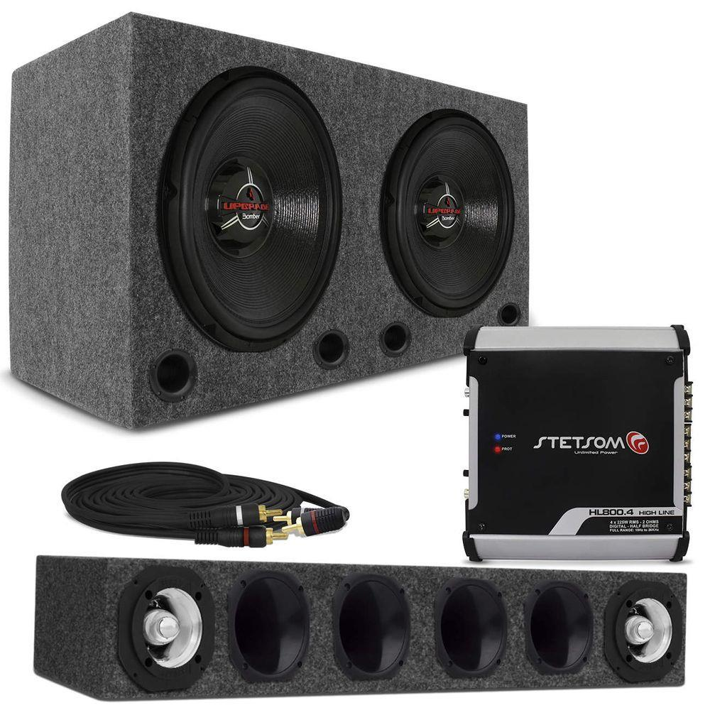
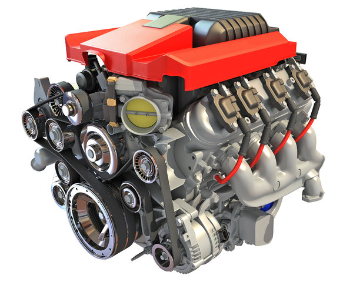

.jpg )
Empresa automobilistica focada na venda de peças para automóveis
Peças disponpiveis no nosso estoque

Trio Som Automotivo Completa 720w Rms Subwoofer 12 Pol + Tweeter + Corneta + Módulo Taramps
Caixa de Som Trio Dutada Shutt 45 Litros Preto + Subwoofer Pioneer Ts-W3090BR 12 Polegadas 600W Rms 2x4 Ohms Bobina Dupla + Driver Jbl D200 50W Rms 8 Ohms Fenólico + Corneta Longa Triton Lc 14-50 Preta Boca Redonda + Super Tweeter Selenium ST200 100W Rms Trio para Som Automotivo + Cabo Rca TechNoise Series 200 5 metros 5mm Pvc Preto Cobre + Aero-Duto 3 Polegadas Profissional Preto + + Módulo Amplificador Taramps Ds 800X4 800W Rms 4 Canais 2 Ohms Rca Classe DNão perca tempo, adquira já seu projeto de som completo para curtir suas playlists em alto estilo. Neste kit incrível você adquire a Caixa de Som Dutada de 45L, para acoplar o Subwoofer de 12 polegadas, o Driver Jbl com Corneta Longa, Tweeter e um Aero Duto.Com todos estes itens você terá um som super poderoso com a potência total de 750W Rms. E para que seu som propague com muita qualidade é só usar o Módulo Amplificador da Taramps. E mais, o Cabo Rca preto com 5 metros de comprimento também acompanha o kit.Cor Disponível da Caixa de Som, Corneta e Cabo Rca:• PretoModelo Disponível da Caixa de Som:• Trio DutadaModelo Disponível do Subwoofer:• Bobina Dupla 2x4 OhmsModelo Disponível do Driver e Super Tweeter:• 8 OhmsModelo Disponível da Corneta:• Longa com Boca RedondaModelo Disponível do Cabo Rca:• 5mm de Diâmetro com 5 metros de ComprimentoModelo Disponível do Módulo:• Ds 800X4 800W Rms Rms 2 Ohms.

Motor 272, Motor 292, V8 Ford, Ford 292, Galaxie, F100
O motor V8 é uma das coisas mais cultuadas no universo automobilístico. Muita gente que se diz fã de carros potentes, quando escuta falar nesse tipo de motor e ouve seu ronco já fica com o cabelo em pé. Mas nem sempre sabem o funcionamento básico dele. Afinal: do que se alimenta, quem são, onde vivem os motores V8? Para simplificar a explicação sobre sua estrutura, basicamente consiste em oito cilindros divididos em duas séries de quatro, uma de frente para a outra. Esses cilindros estão conectados na parte de baixo do motor e dispostos em formato de ‘V’, por isso a nomenclatura. O número que o acompanha é definido pela quantidade de cilindros, sempre divididos em séries iguais de cada lado.
Difusor De Escapamento 2,5 Pol Em Inox Controle Remoto
Difusor de escape ronco esportivo com modulo e cabos eletrônicos blindado a prova d´água. Temos uma função exclusiva de 9 níveis de abertura e fechamento da válvula, assim você pode regular o ronco esportivo de acordo com sua vontade. Fácil instalação 1h de serviço, temos oficinas credenciadas em todo Brasil ou treinamento necessário para instalação correta. A ligação elétrica é plug-and-play, ou seja, sem cortar fios é conectando diretamente na bateria do carro. Compre agora com frete expresso e recebe no máximo em 2 dias, atenciosamente SUPEREDITION empresa séria com atendimento 0800 em todo Brasil.